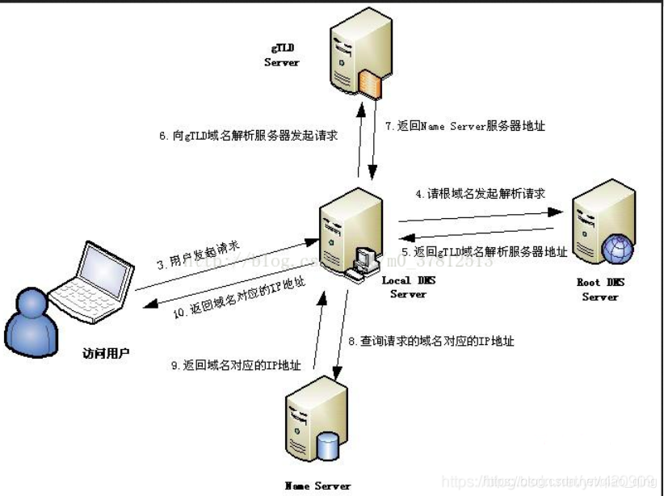

域名系统（英文：Domain Name System，缩写：DNS)
作为将域名和IP地址相互映射的一个分布式数据库，能够使人更方便地访问互联网。DNS使用UDP端口53
域名服务器
1.本地域名服务器
当一个主机发出DNS查询请求时，这个查询请求报文就发送给本地域名服务器。每一个互联网服务提供者ISP都可以拥有一个本地域名服务器
2.根域名服务器
根域名服务器是最高层次的域名服务器，也是最重要的域名服务器。根域名服务器知道所有顶级域名服务器的域名和 IP地址。如果本地域名服务器无法对域名进行解析，就首先求助于根域名服务器
3.顶级域名服务器
顶级域名服务器负责管理在该服务器注册的所有二级域名。当收到 DNS 查询请求时，就给出相应的回答（可能是最后的结果，也可能是下一步需要查询的域名服务器的 IP 地址）
4.权威域名服务器
这就是前面已经讲过的负责一个区的域名服务器。当一个权限域名服务器还不能给出最后的查询回答时，就会告知发出查询请求的DNS客户，下一步应当找哪一个权威域名服务器
查询步骤
1.浏览器会检查缓存中有没有域名对应的ip地址，这个缓存是有过期时长的，一般是几分钟到几小时不等
2.如果浏览器缓存没有，那么就检查操作系统的hosts文件，linux在/etc/hosts文件中配置。
上面两个步骤若都不满足，则进行下面DNS域名服务器（LDNS）发起请求过程
3.如果本地也没有配置那么就会根据向本机配置的本地区DNS域名服务器（LDNS）发起请求，如果你是通过学校连接互联网的一般是你学校的DNS服务器，如果你是在小区连接互联网的一般是网络提供商比如电信，联通的DNS服务器，DNS服务器通常不会太远。如何查看本机的域名服务器，在Linux可以通过 cat /etc/resolv.conf查看
4.如果LDNS也不能解析，那么就直接到根域名服务器请求解析
5.根域名服务器会给本地域名服务器LDNS一个所查询的主域名服务器（gTLD）地址，gTLD是国际顶级域名服务器，比如.com,.cn,.org等
6.本地域名服务器LDNS再向上一步返回的gLTD服务器发送请求
7.gLTD服务器查询并返回域名对应的Name Server域名服务器的地址，通常是你注册的域名服务器，例如你在某个域名服务器提供商申请的域名，那么这个域名解析任务就由这个域名服务提供商来完成
8.Name Server域名服务器会查询存储的域名和ip的映射关系表，将ip连同一个TTL值返回给DNS Server域名服务器
9.LDNS拿到ip和TTL会缓存起来，缓存时间由TTL值控制
10.把解析的结果返回给用户，用户根据TTL值缓存在本地系统缓存中，域名解析过程结束
查询方式
1. 递归查询
本机向本地域名服务器发出一次查询请求，就静待最终的结果。如果本地域名服务器无法解析，自己会以DNS客户机的身份向其它域名服务器查询，直到得到最终的IP地址告诉本机
2. 迭代查询
本地域名服务器向根域名服务器查询，根域名服务器告诉它下一步到哪里去查询，然后它再去查，每次它都是以客户机的身份去各个服务器查询
一次完整的浏览器请求流程
1. 域名解析
2. 发起TCP的三次握手
3. 建立TCP连接后发起HTTP请求
4. 服务器响应html代码
5. 浏览器解析html代码，请求代码中的资源（如js, css, 图片）
6. 浏览器渲染页面